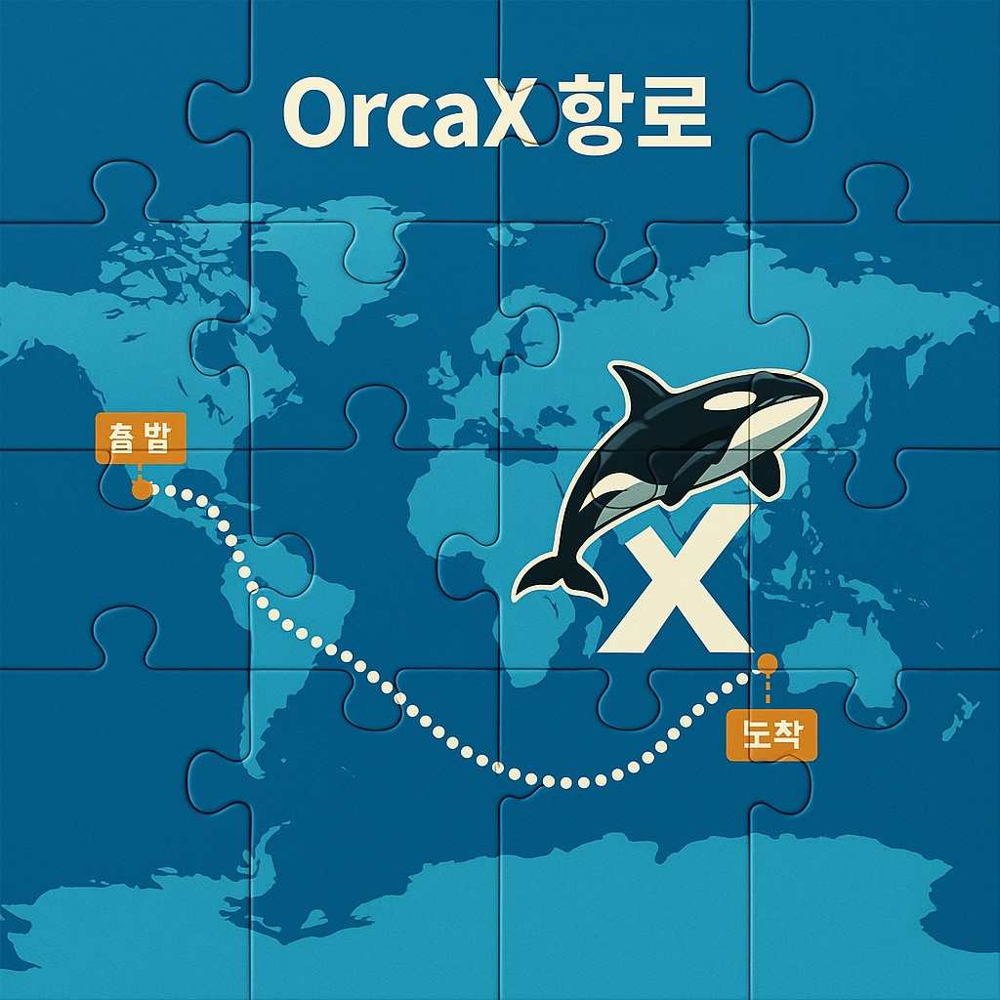

바람이 불지 않아도, OrcaX는 방향을 안다.
바다 위를 항해할 때, 가장 무서운 순간은
폭풍이 아니라 무풍(無風)입니다.
그저 정지된 수평선 위에서 갈 길을 잃고 표류하는 시간.
하지만 진짜 항해자는 바람에 흔들리지 않고,
자신만의 나침반을 믿고 움직입니다.
OrcaX는 그런 항해자들의 디지털 나침반입니다.
바람이 불지 않아도, 세상이 혼란스러워도,
진실한 방향성만은 명확히 알려줍니다.
